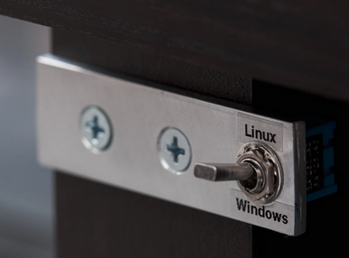
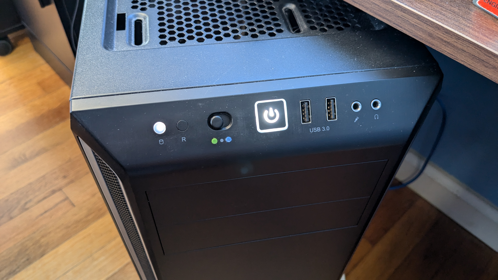
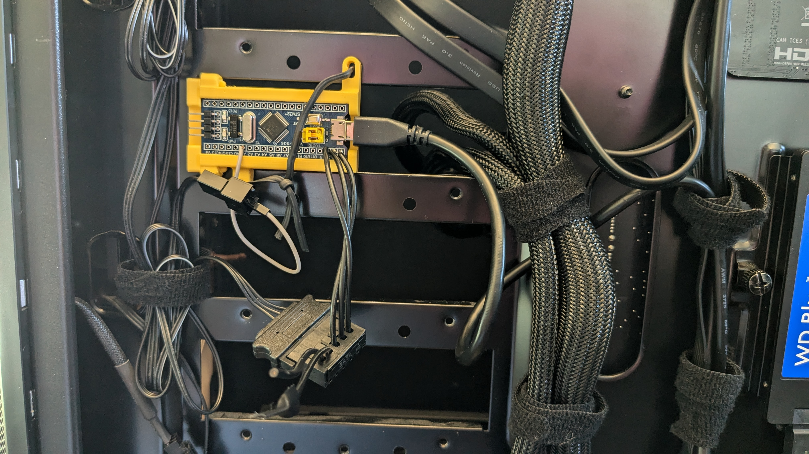

GRUB Dual-Boot Hardware Switch
Motivation
On my personal computer, I like to use both Linux and Windows. This is achieved by installing the operating systems (OS) on separate drives or partitions, then using a bootloader like GRUB to select which OS to boot into when the system powers on. This is known as dual-booting.
This setup has worked great for me, but a minor inconvenience that arises is that the bootloader must load up after the BIOS upon power-on/restart, and you have to wait for this to happen before making an OS selection in the digital GRUB menu. Given that I know which OS I want to boot into before powering the computer on, I want to make a physical switch that allows me to to make the selection and power on at the same time.
Background

Similar Project on Hackaday
Fortunately, I am not the first to want a physical OS selection. Some laptops have two power keys that GRUB can differentiate, but I don't believe this can be applied without a specialized motherboard. A more generalized approach is this project by Stephen Holdaway on Hackaday. To summarize, he uses a physical switch connected to a microcontroller with a USB connection to the motherboard. The microcontroller presents itself to GRUB as a readable device, and GRUB's bootup script is modified to read the switch position and select an OS accordingly.
I used this project as my primary point of reference, as it essentially does what I want, and programming a microcontroller allows for some flexibility in implementation.
Implementation

Wiring Setup
I opted to get an STM32 "bluepill" board, so I can utilize the storage device code from the Hackaday project, which relies on libopencm3. As for the physical switch, my computer case, a Pure Base 600, has an external fan controller on the front PCB, already right next to the restart and power button. This 3-way switch allows you to set extra fans at 5V, 9V, or 12V. I have left it unconnected, so I figure it would be a convenient way to make an OS selection. If I can re-wire the electronics to make those 3 states readable to the microcontroller, I can have two options for Linux and Windows, then the third for the GRUB menu itself, which would still be useful for its other options.
The fan controller takes 5V and 12V from a SATA cable and delivers either those or 9V from a regulator to potential extra fans. The microcontroller's logic operates at 3.3V, so the switch needs to essentially be re-mapped to a maximum of 3.3V. To achieve this, I can connect the 5V input to GND and 12V input to 3.3V, which results in a switch delivering 0V, 2.7V, and 3.3V at its 3 settings. These can be read by an analog pin on the microcontroller. In the picture here, you can see the PCB and microcontroller outside of the case.
On the software side, all I have to do is synthesize Holdaway's code with an analog to digital pin setup for the switch voltage output. For learning libopencm3, I found this useful repo with plenty of example code. I also modified the function that is called when GRUB reads the microcontroller, adding to it a signal to enter the GRUB menu, in addition to the signals for Linux and Windows.
I also wanted to embed the microcontroller inside the case, so I designed a mount in SolidWorks to be 3D-printed, shown here with a simple latch to keep the microcontroller in place. The mounting holes allow it to be mounted it on one of the unused 3.5" bays in the case.
In the pictures below, you can see the computer's front panel re-assembled and the microcontroller mounted inside the computer. The switch is to the left of the power button. To label the associated OS, I stuck a green bindi for Linux and a blue bindi for Windows to the case. As stated earlier, there is also the third option in the middle for the GRUB menu, represented by the printed gray circle. As for the mounting, a twist tie keeps it in place, and fits in among my mildy managed cables. It has been working great, and I am glad to have learned a lot about STM32 and libopencm3 specifically in the process.


BACK